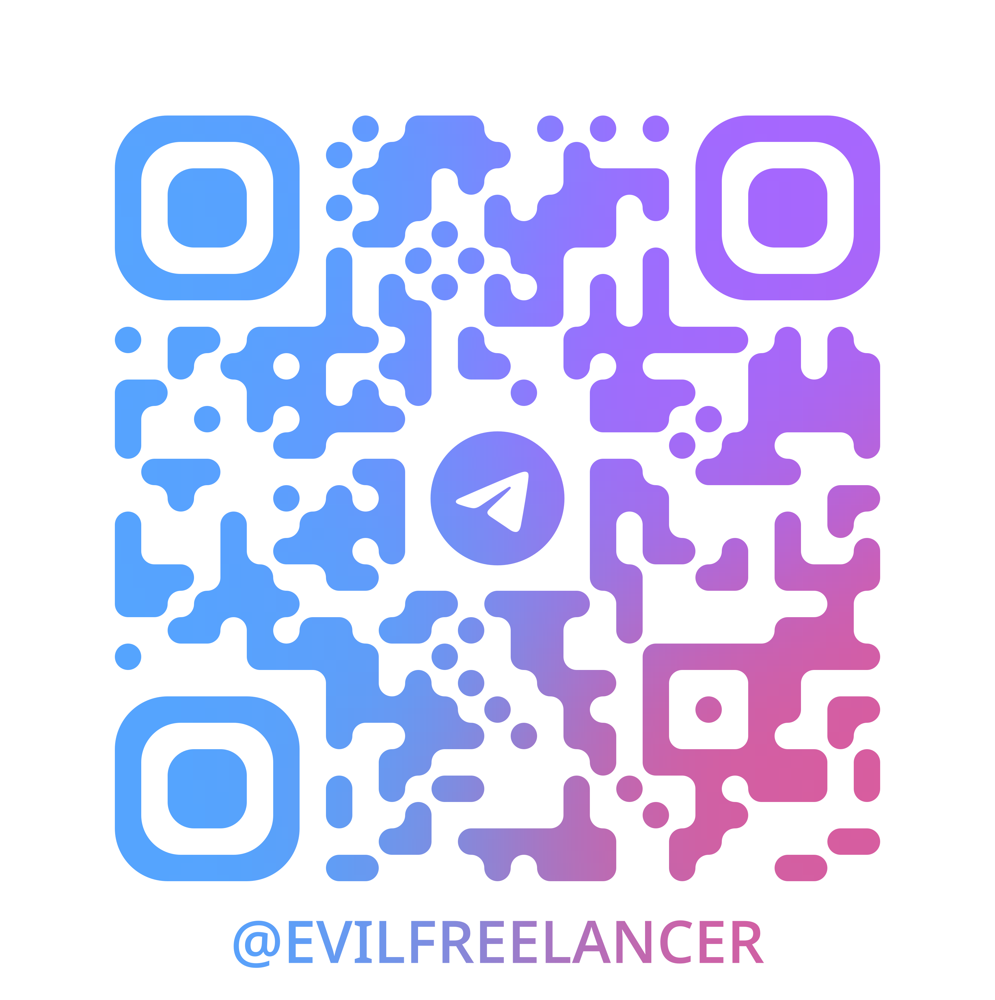

Павел Рыков - Pavel Zloi

Теория, компоненты и короткие примеры кода
Вместо непрозрачного ящика - явные фазы, каждая описана схемой и проверяется
class ReasoningTool(SystemBaseTool): reasoning_steps: list[str] # ход мысли, 2-3 шага current_situation: str # где мы сейчас plan_status: str # статус плана enough_data: bool # хватает данных remaining_steps: list[str] # что осталось task_completed: bool # задача закрыта
После конвертации в JSON схема уходит в модель, каждое поле - обязательный шаг
OpenAI-совместимый эндпоинт, стриминг по SSE, stateless и stateful. Open WebUI, LibreChat, любой OpenAI-клиент
Agent Client Protocol, агент как подпроцесс по JSON-RPC. Obsidian, Zed, VS Code, Claude Desktop
Интерактивный шелл и одиночные запросы прямо из командной строки
Логика агента одна, меняется только способ запуска и один и тот же конфиг
Запускается командой sgracp с тем же конфигом, что и HTTP-сервер
FastAPI-сервер с хранилищем агентов, совместим с любым OpenAI-клиентом
reasoning_tool анализ и следующий шагgenerate_plan_tool генерация планаadapt_plan_tool адаптация планаclarification_tool запрос уточненияfinal_answer_tool финализация ответаanswer_tool промежуточный ответweb_search_tool Tavily, Brave, Perplexityextract_page_content_tool контент из URLcreate_report_tool отчёт с цитатамиrun_command_tool команды и код в песочницеsgr_agent максимально строгий и управляемый SGRsgr_tool_calling_agent SGR плюс нативный tool calling, больше совместимостиtool_calling_agent тулколлинг без SGRdialog_agent диалог с промежуточными результатамиiron_agent упрощённый, без tool callingЛюбой можно расширить своим наследником, механизм ядра общий
Каждый следующий слой переопределяет предыдущий. Секции конфига:
tools: # простая регистрация reasoning_tool: {} final_answer_tool: {} # с конфигурацией web_search_tool: engine: "tavily" # или brave, perplexity api_key: "${TAVILY_API_KEY}" max_results: 10 # кастомный тул из модуля read_file_tool: base_class: "tools.ReadFileTool"
mcp: mcpServers: # удалённый сервер по URL deepwiki: url: "https://mcp.deepwiki.com/mcp" # локальный stdio-сервер filesystem: command: "npx" args: ["-y", "@modelcontextprotocol/server-filesystem"]
Агент автоматически получает тулы от подключённых MCP-серверов
agents: sgr_tool_calling_agent: base_class: "agents.ResearchSGRToolCallingAgent" llm: model: "gpt-4.1-mini" temperature: 0.4 tools: - "reasoning_tool" # обязателен для SGR - "web_search_tool" - "create_report_tool" - "final_answer_tool"
from sgr_agent_core.base_tool import BaseTool from pydantic import Field class FindTool(BaseTool): tool_name = "find_tool" reasoning: str = Field(description="зачем ищем файлы") pattern: str = Field(description="glob-паттерн имени") async def __call__(self, context, config) -> str: return find_files(self.pattern) # текст для модели
Поля Field это одновременно аргументы и подсказка модели, как их заполнить
from sgr_agent_core.agents import SGRToolCallingAgent class SGRFileAgent(SGRToolCallingAgent): name = "sgr_file_agent" toolkit = [ListDirTool, ReadFileTool, FindTool, GrepTool] # working_directory ограничивает песочницу # при желании переопределяем шаги цикла
Наследник регистрируется в ядре автоматически и доступен по имени в конфиге
# поставить пакет pip install sgr-agent-core # скопировать и заполнить ключи в config.yaml, затем запустить sgr -c config.yaml # HTTP-сервер, OpenAI-совместимый API sgrsh -c config.yaml # интерактивный CLI sgracp -c config.yaml # агент по протоколу ACP через stdio
Дальше обращаемся как к обычному OpenAI API, где model это имя агента
Берём готовый клиент и указываем адрес агента, свой фронт писать не нужно
Поверх видимых шагов можно строить метрики и сравнивать прогоны
github.com/vamplabAI/sgr-agent-core - проект команды neuraldeep и vamplabAI при поддержке red_mad_robot, концепция SGR - LLM Under the Hood
Пишите в канал, там разборы про агентов, SGR и self-host без маркетинга.